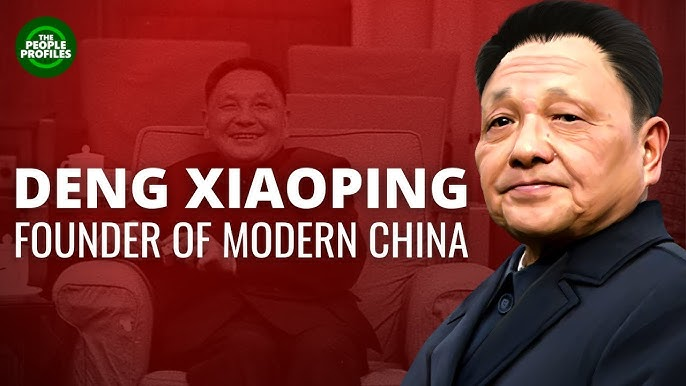

Courtesy of The People Profiles
In conclusion, the one-child policy was a dramatic measure implemented by Deng Xiaoping to address the challenges of rapid population growth and economic strain.
While it achieved its goal of slowing population growth and increasing China’s economic presence, it also created significant long-term consequences. These included an aging population, gender imbalances, and a shrinking workforce, all of which will continue to be challenges to China's social and ironically, economic development.